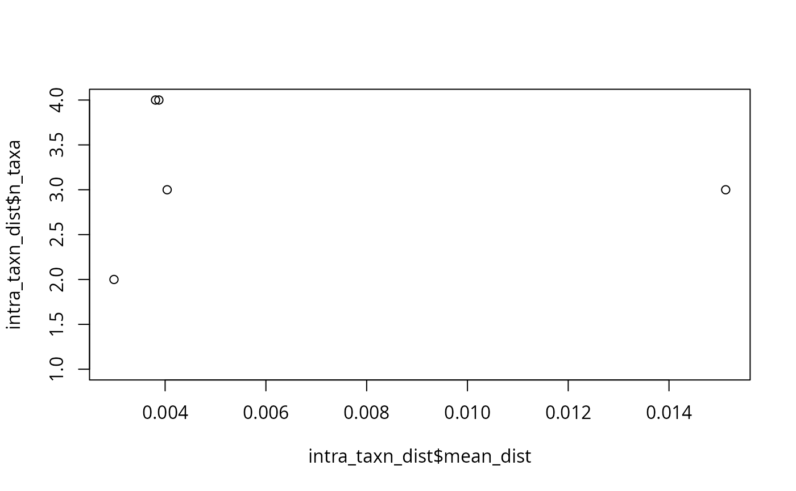
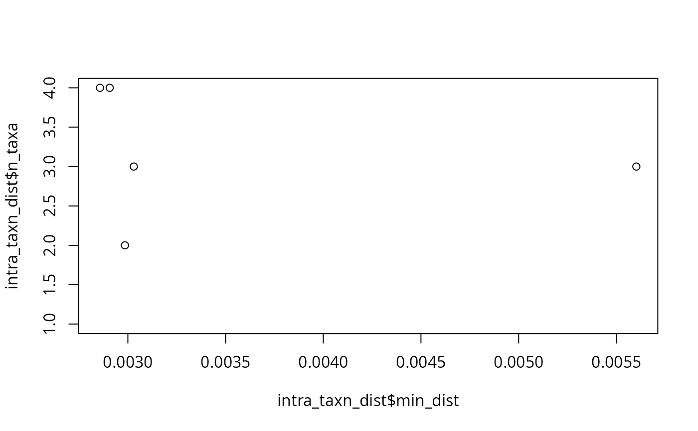
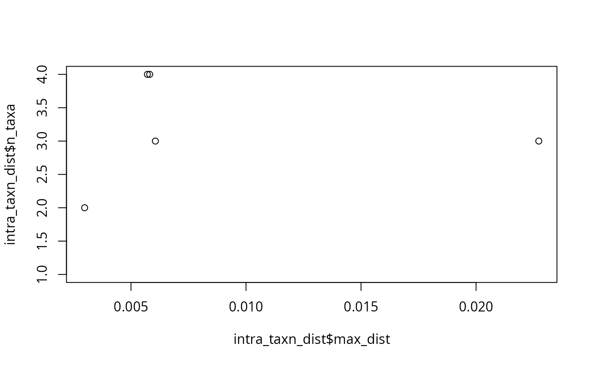

Compute intra-taxanames distances for each taxa names
Source:R/intra_taxnames_dist.R
intra_taxnames_dist.Rd<a href="https://adrientaudiere.github.io/MiscMetabar/articles/Rules.html#lifecycle"> <img src="https://img.shields.io/badge/lifecycle-experimental-orange" alt="lifecycle-experimental"></a>
This function computes intra-taxanames distances for each taxonomic names (e.g. Genus species) in a phyloseq object containing ASV/OTU sequences and taxonomy.
The distances are computed using the DECIPHER package, which aligns the sequences (`DECIPHER::AlignSeqs()`) and calculates a distance matrix (`DECIPHER::DistanceMatrix()`).
Usage
intra_taxnames_dist(
physeq,
taxonomic_rank = c("Genus", "Species"),
verbose = TRUE,
verbose_DECIPHER = FALSE,
discard_NA = TRUE,
...
)Arguments
- physeq
A phyloseq object containing ASV/OTU sequences and refseq
- taxonomic_rank
Character. Name of the taxonomy column(s) containing taxonomic assignments to compute intra-taxa distances. Can be a vector of two columns (e.g. c("Genus", "Species"), the default).
- verbose
Logical. Print progress messages (default: TRUE)
- verbose_DECIPHER
Logical. If TRUE, print messages from DECIPHER functions (default: FALSE)
- discard_NA
(logical, default `TRUE`). Passed to [taxonomic_rank_to_taxnames()].
- ...
Additional arguments to pass to `DECIPHER::AlignSeqs()`
Value
A data.frame with columns: - taxnames: taxonomic names - n_taxa: number of taxa assigned to this taxnames - mean_dist: mean intra-taxanames distance - min_dist: minimum intra-taxanames distance - max_dist: maximum intra-taxanames distance
Examples
intra_taxn_dist <- intra_taxnames_dist(data_fungi_mini)
#> ✔ Processing Stereum ostrea - 3 taxa
#> ✔ Processing Xylodon raduloides - 3 taxa
#> ✔ Processing Ossicaulis lachnopus - 4 taxa
#> ℹ Stereum hirsutum is represented by only one taxa
#> ℹ Antrodiella brasiliensis is represented by only one taxa
#> ℹ Basidiodendron eyrei is represented by only one taxa
#> ℹ Sistotrema oblongisporum is represented by only one taxa
#> ✔ Processing Fomes fomentarius - 4 taxa
#> ℹ Mycena renati is represented by only one taxa
#> ℹ Helicogloea pellucida is represented by only one taxa
#> ℹ Radulomyces molaris is represented by only one taxa
#> ℹ Elmerina caryae is represented by only one taxa
#> ℹ Phanerochaete livescens is represented by only one taxa
#> ℹ Gloeohypochnicium analogum is represented by only one taxa
#> ℹ Hyphoderma roseocremeum is represented by only one taxa
#> ℹ Hyphoderma setigerum is represented by only one taxa
#> ℹ Trametes versicolor is represented by only one taxa
#> ℹ Peniophora versiformis is represented by only one taxa
#> ✔ Processing Exidia glandulosa - 2 taxa
#> ℹ Peniophorella pubera is represented by only one taxa
#> ℹ Auricularia mesenterica is represented by only one taxa
#> ℹ Marchandiomyces buckii is represented by only one taxa
#> ℹ Hericium coralloides is represented by only one taxa
#> ℹ Xylodon flaviporus is represented by only one taxa
#> ✔ Intra-taxnames distance computation complete
#> ℹ Total taxnames: 24
#> ℹ Taxnames with only one taxa (no distance computation): 19
#> ℹ Taxnames with multiple taxa: 5
#> ℹ Mean intra-taxnames mean distance: 0.006
#> ℹ Mean intra-taxnames maximum distance: 0.0087
#> ℹ Mean intra-taxnames minimum distance: 0.0035
plot(intra_taxn_dist$mean_dist, intra_taxn_dist$n_taxa)

plot(intra_taxn_dist$min_dist, intra_taxn_dist$n_taxa)

plot(intra_taxn_dist$max_dist, intra_taxn_dist$n_taxa)
